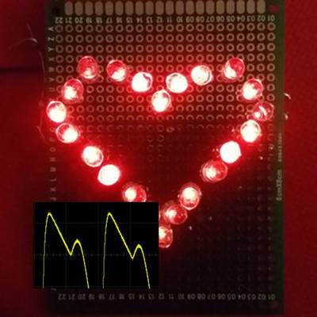
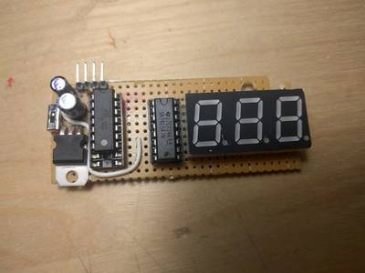
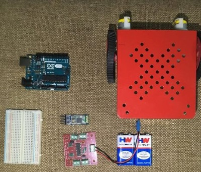

2016-09-08 - Nº 71

Editorial
Esta é a Newsletter Nº 71 que se apresenta com o mesmo formato que as anteriores. Se gostar da Newsletter partilhe-a!
Todas as Newsletters encontram-se indexadas no link.
Esta Newsletter tem os seguintes tópicos:
Esta semana a câmara de alta resolução da Rosetta (sonda que se encontra no espaço desde 2004) conseguiu descobrir finalmente o modúlo Philae no cometa 67P/ChuryumovGerasimenko. A menos de um mês do final da sua missão pode-se dizer que foi um sucesso. A Facebook desenvolveu um novo algoritmo de compressão designado por Zstandard que apresenta melhoras substanciais em termos de taxas de compressão versus o tempo de processamento. A fundação Raspberry Pi está de parabéns por ter conseguido o feito de terem vendido um total de 10 milhões de Raspberry Pi. Para comemorar esse feito apresentou um starter Kit que para funcionar apenas lhe falta o écran.
Na Newsletter desta semana apresentamos diversos projetos de maker assim como alguns modelos 3D que poderão ser úteis.
 João Alves ([email protected])
João Alves ([email protected])
O conteúdo da Newsletter encontra-se sob a licença  Creative Commons Attribution-NonCommercial-ShareAlike 4.0 International License.
Creative Commons Attribution-NonCommercial-ShareAlike 4.0 International License.
Novidades da Semana ^
Philae found!
"Less than a month before the end of the mission, Rosettas high-resolution camera has revealed the Philae lander wedged into a dark crack on Comet 67P/ChuryumovGerasimenko. The images were taken on 2 September by the OSIRIS narrow-angle camera as the orbiter came within 2.7 km of the surface and clearly show the main body of the lander, along with two of its three legs. The images also provide proof of Philaes orientation, making it clear why establishing communications was so difficult following its landing on 12 November 2014." [...]
Smaller and faster data compression with Zstandard
"People are creating, sharing, and storing data at a faster rate than at any other time in history. When it comes to innovating on storing and transmitting that data, at Facebook we're making advancements not only in hardware such as larger hard drives and faster networking equipment but in software as well. Software helps with data processing through compression, which encodes information, like text, pictures, and other forms of digital data, using fewer bits than the original. These smaller files take up less space on hard drives and are transmitted faster to other systems. There's a trade-off to compressing and decompressing information, though: time. The more time spent compressing to a smaller file, the slower the data is to process. Today, the reigning data compression standard is Deflate, the core algorithm inside Zip, gzip, and zlib [2]. For two decades, it has provided an impressive balance between speed and space, and, as a result, it is used in almost every modern electronic device (and, not coincidentally, used to transmit every byte of the very blog post you are reading). Over the years, other algorithms have offered either better compression or faster compression, but rarely both. We believe we've changed this." [...]
TEN MILLIONTH RASPBERRY PI, AND A NEW KIT
"When we started Raspberry Pi, we had a simple goal: to increase the number of people applying to study Computer Science at Cambridge. By putting cheap, programmable computers in the hands of the right young people, we hoped that we might revive some of the sense of excitement about computing that we had back in the 1980s with our Sinclair Spectrums, BBC Micros and Commodore 64s. At the time, we thought our lifetime volumes might amount to ten thousand units if we were lucky. There was was no expectation that adults would use Raspberry Pi, no expectation of commercial success, and certainly no expectation that four years later we would be manufacturing tens of thousands of units a day in the UK, and exporting Raspberry Pi all over the world." [...]
Outras Notícias
- AMD working on 7nm 48 core processor
- Another Station Upgrade Spacewalkers Jeff Williams and Kate Rubins to install new TV cameras
- Nine-year-old boy prints a mechanical hand for his teacher
- IBM Linux Servers Designed to Accelerate Artificial Intelligence, Deep Learning and Advanced Analytics
- Alphabets Project Wing Delivery Drones to Be Tested in U.S.
Ciência e Tecnologia ^
New Tool Predicts Autism Risk Genes
"Identifying which genes cause autism is challenging, but a new tool may point researchers in the right direction. Scientists at the Simons Foundation and Princeton University have developed a computational technique that can sift through more than 25,000 genes in the human genome and rank them based on the probability that they are associated with autism spectrum disorder (ASD). The tool identified hundreds of previously unreported candidate autism risk genes, along with networks, cellular functions and developmental stages of the brain that play a role in ASD. The tool could work for almost any complex disease, the authors say in their Nature Neuroscience paper published online August 1." [...]
Sprinkling of neural dust opens door to electroceuticals
"University of California, Berkeley engineers have built the first dust-sized, wireless sensors that can be implanted in the body, bringing closer the day when a Fitbit-like device could monitor internal nerves, muscles or organs in real time. Because these batteryless sensors could also be used to stimulate nerves and muscles, the technology also opens the door to electroceuticals to treat disorders such as epilepsy or to stimulate the immune system or tamp down inflammation. The so-called neural dust, which the team implanted in the muscles and peripheral nerves of rats, is unique in that ultrasound is used both to power and read out the measurements. Ultrasound technology is already well-developed for hospital use, and ultrasound vibrations can penetrate nearly anywhere in the body, unlike radio waves, the researchers say." [...]
Efficient electricity traffic lights made from a single molecule
"Diodes are the traffic lights of electrical devices: they determine whether or not electricity is able to pass through a circuit. Chip manufacturers strive to make them as small as possible, so that they can fit the maximum possible amount of components on a chip. When the lights are green, the diodes need to ensure a good flow of traffic, but they also need to ensure that as little electricity as possible can jump the lights when they are red. TU Delft researchers have successfully manufactured a diode using just a single molecule. At 600, this diodes ratio of red to green (in technical jargon: its rectification ratio) is significantly higher than in earlier research (15). The researchers were also able to make the diode tuneable for the first time. They recently published their research in the international journal Nanoscale." [...]
Temporary Tattoo Keeps Tabs On Alcohol Intake
"Had one too many to drink and need to know if youre OK to drive home? You might one day be able to stick an electronic tattoo on your arm to tell you. Researchers have made a disposable tattoo-based device that can accurately measure alcohol levels in sweat and relay the results wirelessly to your phone or smart watch. Blood alcohol concentration is the most accurate way to verify if someone is drunk. Measuring it requires a finger prick, though, so its used by law enforcement in extreme cases. Breathalyzers are less invasive, but they can give false positives and can be spoofed easily, says Patrick Mercier, an electrical and computer engineering professor at University of California, San Diego. One rinse with mouthwash can throw them off, he adds." [...]
Modelos 3D ^
Com a disponibilidade de ferramentas que permitem dar azo a nossa imaginação na criação de peças 3D e espaços como o thingiverse para as publicar, esta rubrica apresenta alguns modelos selecionados que poderão ser úteis.
Clip pipe fully parametric
"THis is a fully customize clip with few parameters using Openscad." [...]
Parametric Spring Contacts Battery Box for AA Cells
"This is a remix of flummer's battery box in order to use different battery contacts. The contacts I am using are available here for a quite reasonable price: http://www.banggood.com/10-Pairs-Silver-Tone-Metal-Battery-Spring-Plate-Set-for-AA-AAA-Batteries-p-1046111.html Overall the battery box is slightly more compact than the original one (about 2mm less in thinkness and 6mm less in length)." [...]
A Very Customizable Funnel
"I made a simple funnel in openscad a few months ago & needed to change it & decided to make it more customizable. I looked at a few images of funnels on the internet to get an idea of what else to vary in the design & this is what I came up with. Since there are quite a few variables you can change, I added a screen shot of a drawing showing what each dimension is related to. The Small_Thk dimension is only changable in the downloaded openscad source. I made it the same as Thk for the thingiverse customizable version. I included a STL file of the size I used & this is also the default settings in the openscad script. I changed the Hook_xx variable names to a more appropriate Eye_xx names after a friend mentioned this." [...]
A Maze'n'Puzzle
"Lay the puzzle and see if you can solve the maze. Hide something and go for a treasure hunt. Create new games. Take turns moving pieces around to trap you opponent in the maze. Print more pieces and make huge mazes." [...]
Projetos Maker ^
Diversos Projetos interessantes.
Speed Math Game with Arduino
"Hi, how fast can you do math? Speed Math Game is a fun way to learn and practice your math skills. It has 3 levels (Easy, Medium and Hard). The easy level shows numbers between 1 and 10. In the Medium level the first operand of the operation is a number between 50 and 99 and the second operand is a number between 1 and 10. The Hard level shows numbers between 50 and 99. When the game starts, it displays the level mode, press 1, 2 or 3 to select the level. After, operations ("+", "-", "*", "/") will be randomly generated, and the user will type the result of the operation, while the time elapsed is shown (minutes, seconds, and hundreths of seconds). Only type the result, and if it is right, automatically the next operation is shown (NO Enter key is needed), if you make a mistake in the result, a sad face is shown and you can correct." [...]

PulseSim - Photoplethysmograph (Heartbeat) Analog Simulator
"The volume of blood in our fingers changes at different parts of the cardiac cycle (heartbeat). Immediately following ventricular contraction (when the heart pumps blood out of the ventricles and to the rest of the body), the volume of blood in the fingers increases slightly. This change in blood volume can be measured using finger photoplethysmography. In this technique, an LED shines light through a person's finger and a photodiode measures the amount of light that passes through the finger. The amount of light that hits the photodiode will change due to the change in blood volume in the finger. Interestingly enough, if we plot intensity of light vs time, we get a very characteristic waveform (here and here). The initial sharp rise of our pulse waveform indicates the systolic phase (aotric and ventricular contraction). The smaller secondary peak occurs due to the closure of the aortic valve at the end of the cardiac cycle. This smaller peak is called the dicrotic notch. In this Instructable, I will show you how to recreate the pulse waveform using basic circuit components (resistors, capacitors, transistors, and op amps) without the use of a microcontroller. I didn't have much inspiration for doing this other than I love finding excuses to play with circuits and I just wanted to see if I could do it. ;) I thought about putting it together a little more to make it some sort of educational tool. I was thinking the circuit could be tweaked in order to show students how the waveform changes when someone has some sort of ailment that messes with their cardiac cycle. I'm not sure if I will still get around to doing that, but I thought I would share my progress thus far. MattDougan and I made this in a bit of a competition to see who could do this better. I won by the way. Lol." [...]
GroveWeatherPi - Raspberry Pi Based Weather Station - No Soldering Required
"The Raspberry Pi is a fabulous device to on which to build your projects. The GroveWeatherPi project is designed to show the capabilities of this computer while remaining accessible to a diverse Maker community. The key to keeping this project accessible to many people is to minimizing the need for complex wiring and soldering. In this tutorial, we are showing how to build Raspberry Pi based Weather Station in two parts (actually 13 steps). The first major part is building the GroveWeatherPi station itself. This can be done with no soldering. The second part of the tutorial is outfitting your GroveWeatherPi with Solar panels. This can be done with a very minimal amount of soldering to produce a fully solar powered Raspberry Pi based weather station." [...]
Arduino Labyrinth
"The goal of our project was to bread board an Arduino micro controller to control two servo motors on an X and Y axis with a joystick. The program and servos would then be used to control a wooden labyrinth, but can also be used for a number of other projects such as a pan and tilt camera. In addition we added a solenoid to reload the ball to the start position." [...]
Let's Make! 5 More BreadBoard Projects For Beginners
"With the previous version of this instructable (10 Breadboard Projects For Beginners) hitting more than 300K views and getting a lot of positive feedback from people, I decided to have one more 'How To' with more awesome projects! So here's presenting you 5 More Breadboard Projects For Beginners. Following the same concept as the previous one, I always aim it to be learning experience for both you and me. If you are not too experienced with soldering or printed circuit boards or etching, then this is perfect for you. Well breadboards, were made mostly for prototyping, but you can use them to experiment and learn through temporary projects. This is just to help you get started with electronics and give an intro to basic components/the way they work. After trying these, you can move on to micro controllers and try a few difficult projects." [...]
Rotary Encoder Display Panel
"While the Arduino is fun, inspirational and hopefully educational as things are built, ideas are explored and ultimately shared for the edification and amusement of all, an Arduino based project can equally be tedious and trying. The plethora of modules and kits of course bypass the angst associated with the gritty part of DIY circuitry and there are many clever do-dads shared in many communities that help breadboard the brilliant, the clever and the amusing Arduino creations. The excitement can however wear a bit thin when the relevant code for the project involves one or more variable quantities whose introduction means iterations of uploads via the IDE or schemes for passing variants via the serial monitor window." [...]
Arduino Pong With TV Output
"Here's a simple project that you can do to get acquainted with the TVOut Library, and using an Arduino with RCA Jack outputs! Pong is a classic. The foundations of video gaming start with two lines and a dot bouncing back and forth on a black screen. The Atmega328 is leaps and bounds more powerful than the original pong system (which was either quite a lot of transistors, or a chip with less power than a dollar store calculator), and we'll have no problem making a pong clone with arduino. If you want to make your own game with arduino, this is a cool place to start. Let's make Pong!" [...]
DIY Arduino Battery Capacity Tester - V1.0
"I have salvaged so many old lap-top batteries ( 18650 ) to reuse them in my solar projects.It is very difficult to identify the good cells in battery pack.Earlier in one of my Power Bank Instructable I have told, how to identify good cells by measuring their voltages, but this method is not at all reliable.So I really wanted a way to measure each cell exact capacity instead of their voltages. Few week ago, I have started the project from the basics.This version is really simple one,which is based on Ohms Law.The accuracy of the tester wont be 100% perfect, but it does give reasonable results that can be used and compared with other battery, so you can easily identify good cells in a old battery pack. During my work I realised, their are lot of things which can be improved.In future I will try to implement those things. But for the time being I am happy with it.I hope this little tester will be useful, so I am sharing it with you all." [...]
Arduino 433MHz message transmission over 100 meters
"In this instructable I will show how to employ this ultra cheap 433mHz transmitter/receiver kit to send and receive short messages over max 100 meters in open air (tested)." [...]
Chronio - Low power Arduino based (smart)watch
"Chronio is an Arduino-based 3D-printed Watch. By not including fancy Wifi and BLE connectivity, it gets several months of run time out of a 160mAh button cell. The display is an always-on 96x96 pixel Sharp Memory LCD. If telling the time is not enough, you can play a simplified version of Flappy Bird on it. DIY watches often consist of a pcb and screen wrapped in duct tape. I wanted to change that by designing a 3D-printed case. It is closely oriented on the Pebble Time. Currently I am testing the battery life. The Third and final PCB version is finished. I will update the project logs over time." [...]
Basic Aquatic Shield
"The Basic Aquatic Shield senses the general settings of a small habitat. This can be a fish tank, an indoor greenhouse or a large aquaponics setup. My shield uses some lower-end sensors and outputs the data to an LCD screen. The concept was combined by me after i started to adjust another led-growth-experiment. I was trying to grow some of the easiest aquatic plants in a tropical open water aquarium. The setup was quite complex and potentially dangerous as light levels increased. I searched for a way to monitor all the basics the easy way After looking around the web i found a plant care concept from seed studios. Tried to duplicate the system, but found some errors in the code. The hardware also made me second ges myself a couple of times. Testing each component gave me a better understanding but i left this system before expensive parts were needed. Going over the components gave me more details and that lead to the B.A.S. Its made up around a arduino Nano and uses a old style nokia LCD. The sensors include a moisture sensor, a humity / temperature sensor and a light sensor. Extra components are used to increase the stability and protect the MCU." [...]
Solar Charger and Adjustable Power Supply
"In this instructable I am going to show you how to build a Solar Charger in a very simple way, so that it will be easy and affordable for anyone to build its own one. We are going to use solar panels as our source of energy, to be able to use this device anywhere. We will use some Li-ion batteries to store the solar energy when it is available, so that we can use it at every time, not only when it is sunny." [...]
DIY ECG with 1 op-amp
"I made surprisingly good ECG from a single op-amp and 5 resistors! An ECG (electrocardiograph, sometimes called EKG) is a graph of the electrical potential your heart produces as it beats. Seven years ago I posted DIY ECG Machine on the Cheap which showed a discernible ECG I obtained using an op-amp, two resistors, and a capacitor outputting to a PC sound cards microphone input. It didnt work well, but the fact that it worked at all was impressive! It has been one of the most popular posts of my website ever since, and I get 1-2 emails a month from people trying to recreate these results (some of them are during the last week of a college design course and sound pretty desperate). Sometimes people get good results with that old circuit, but more often than not the output isnt what people expected. I decided to revisit this project (with more patience and experience under my belt) and see if I could improve it. My goal was not to create the highest quality ECG machine I could, but rather to create the simplest one I could with emphasis on predictable and reproducible results. The finished project is a blend of improved hardware and custom cross-platform open-source software (which runs on Windows, Linux, and MacOS), and an impressively good ECG considering the circuit is so simple and runs on a breadboard! Furthermore, the schematics and custom software are all open-sourced on my github!" [...]
Make A Simple Bipedal Humanoid Robot (Servo Walking Robot)
"Bipeds are really cool because they are by far the most recognizable kind of robot. Companies have spent decades and millions to make these things. I've been wanting to make a bipedal bot for sometime now but most of them need a lot of motors and are pretty expensive to make. I managed to make a simple bipedal robot at home out of essentially four micro servo motors (which are pretty cheap), an arduino and a breadboard. The bot can walk, kick, dance, navigate slopes etc. Moreover since it's an arduino you can always add sensors or other body parts pretty easily and experiment with the bot." [...]
Saving Water Using LEDs
"This Instructable describes about conservation of water which get wasted due to overflowing of tanks using few LEDs and Transistor.Hope you would enjoy making it. I live in India where most of the people have overhead tanks at their houses which they fill with the help of submersible pumps.Most of the time they are on the rooftop of second floor or even higher so monitoring the water level during filling of the tank is quite difficult as one have to go all up to the top floor to monitor the water level.As a result many times thousand of gallons of water is wasted everyday throughout my locality because of overflowing of these tanks. So having some knowledge of Electronics I have decided to design some very cheap and effective Solution to monitor the water level." [...]
VHF Frequency Counter with PC Interface
"Projects I build often involve frequency synthesis, and one of the most useful tools to have around is a good frequency counter. Being a budding programmer and data analysis guru, I love the idea of being able to access / log / analyze frequency readings on my computer too. Commercial frequency counters can be large, expensive, and their calibration is a chicken-and-egg problem (you need a calibrated frequency counter to calibrate a frequency reference you use to calibrate a frequency counter!). For about the cost of a latte I made a surprisingly good frequency frequency counter (which directly counts >100 MHz without dividing-down the input signal) by blending a SN74LV8154 dual 16-bit counter (which can double as a 32-bit counter, $1.04 on mouser) and an ATMega328 microcontroller ($3.37 on Mouser). Although these two chips are all you need to count something, the accuracy of your counts depend on your gate. If you can generate a signal of 1 pulse per second (1PPS), you can count anything, but your accuracy depends on the accuracy of your 1PPS signal. To eliminate the need for calibration (and to provide the 1PPS signal with the accuracy of an atomic clock) Im utilizing the 1PPS signal originating from a GPS unit which I already had distributed throughout my shack (using a 74HC240 IC as a line driver). If you dont have a GPS unit, consider getting one! Im using a NEO-6M module ($17.66 on Amazon) to generate the 1PPS gate, and if you include its cost were up to $22.07. Also, all of the code for this project (schematics, C that runs on the microcontroller, and a Python to interact with the serial port) is shared on GitHub! You may be wondering, why do GPS units have incredibly accurate 1PPS signals? Its a good question, but a subject for another day. For now, trust me when I say theyre fantastically accurate (but slightly less precise due to jitter) if youre interested in learning more read up on GPS timing." [...]
Smart Bed Lighting
"Motion activated bed lighting that only turns on between the hours of 9PM and 7AM. Lights your way automatically. Need to get up in the middle of the night? No more stumbling around in the dark or being blinded by bright lights with this device. This devices uses a PIR motion sensor to turn on hidden lights under a bed to light your path when getting out of bed. An RTC keeps time and makes sure the LED strip will only be turned on during the desired hours. " [...]
Persistence Of Vision
"Persistence of vision is an optical illusion, it works on a simple phenomenon how our day to day television works." [...]
Intelligent Charger for 9V NiMH Rechargeable Batteries V1
"Regulated smart constant current charger for 9V NiMH rechargeable batteries." [...]
The Maven Box: an Arduino Controller for Software Developers
"Every job has it's routine. I am a software developer who works with a Git/Maven based workspace everyday. So when I start working, my daily routine is to update and build my local workspace, pulling changes from GitHub, execute a maven build and execute the updated software. Usually I get my first coffee after that, but because I love coffee so much I thought there must be a faster way to get my system updated and running." [...]
DIY UV meter With Arduino and a Nokia 5110 Display
"In this Instructable I am going to show you how to build a very useful UV meter with a big Nokia 5110 LCD display using Arduino. Protect your skin from the dangers of the sun's radiation with this project! What is the Ultraviolet (UV) Index? The ultraviolet index or UV Index is an international standard measurement of the strength of sunburn-producing ultraviolet (UV) radiation at a particular place and time. The scale was developed by Canadian scientists in 1992, then adopted and standardized by the UN's World Health Organization and World Meteorological Organization in 1994. It is primarily used in daily forecasts aimed at the general public, and is increasingly available as an hourly forecast as well. The UV Index is designed as an open-ended linear scale, directly proportional to the intensity of UV radiation that causes sunburn on human skin. For example, if a light-skinned individual (without sunscreen or a suntan) begins to sunburn in 30 minutes at UV Index 6, then that individual should expect to sunburn in about 15 minutes at UV Index 12 twice the UV, twice as fast." [...]

DIY Bike Speedometer
"I just finished my latest project: A speedometer for my bike. It uses an attiny84 chip as its main processor and an 74ls47 chip as a driver for its 7-Segment Display (7SD from now on). If you have the parts it's a project you can finish in a day. It requires simple arduino coding skills, intermediate soldering skills and some knowledge on electronics but we are going to cover everything in this instructable. The total cost of the project is around 15." [...]
uWaiPi - Time Driven Automatic Plant Watering System
"Hi there! Did you forget to water your plants today morning? Are you planning for a vacation but thinking who's going to water the plants? Well, if your answers are Yes, then I have a solution for your problem. I am really glad to introduce uWaiPi - Time Drive Automatic Plant Watering System. It's a simple system you can make which could help you forgetting the task of watering your plants daily. uWaiPi works on Raspberry Pi. With little knowledge on Raspberry Pi programming and moderate skills on electronics, you should be able to build the system at your home within 3-4 days." [...]

Gesture Controlled Robot Using Arduino And Bluetooth
"Today we are going to make a car that can be controlled using the accelerometer in a android phone. We can use the data from the accelerometer and transmit it to arduino using bluetooth module HC-05. With simple programming this project will be done." [...]
LED Matrix Handbag 2.0 How To
"My previous post describes a handbag containing a Twitter-connected LED matrix. The project was somewhat complicated to assemble particularly the handbag sewing and construction. This post describes a simpler and more practical way to incorporate an LED matrix into a handbag. Ive made several different versions of this project now, involving different styles of handbag. The version described here produces a vinyl tote bag with contrasting accent fabric as seen above." [...]
Intelligent Braking system prototype by arduino
"Hi, This Aditya kombe from EuphoLabs Hardware development community brought a new project that is a concept converted to Reality .Here we are making something that is visualized by many automobile companies like here's demo- So we are making a demo prototype of such system that applies brakes proportional to the distance between car and obstacle." [...]
Crush Cans Effortlessly with an Arduino-Powered Arm
"Use an Arduino and an H-bridge motor circuit to build an automatic can crusher. Linear actuators convert the fast rotation of a DC motor into slow linear movement, and they can provide quite a strong pushing or pulling force. You can easily control these actuators using a simple H-bridge circuit put it together with an Arduino and a bit of woodwork, and you can make yourself an automatic crusher for beverage cans no soldering required! " [...]
Segmented Log Lamp
"I got inspired through pictures on the WWW to make this log-lamp. When I outlined this idea to my wifey she got hyped up quite a bit so I had to put my money where my mouth is. Lets get crackin!" [...]
That's all Folks!